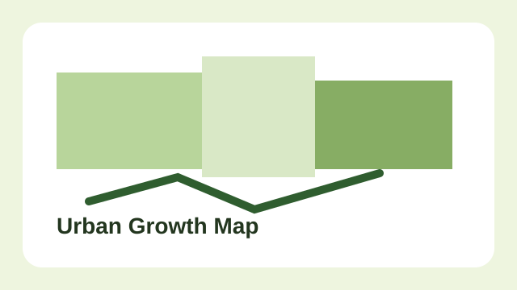
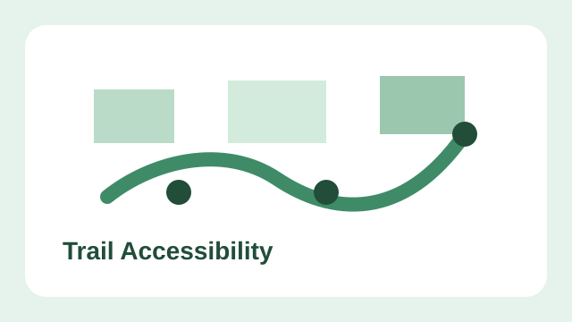
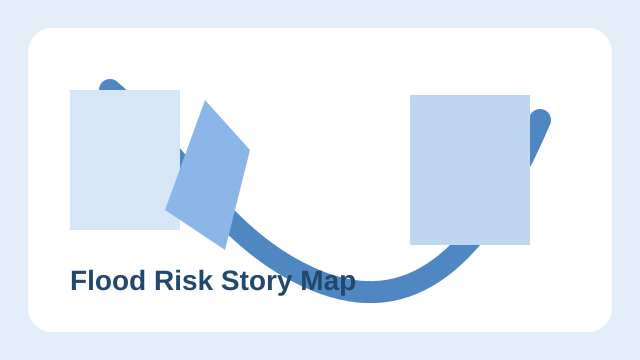
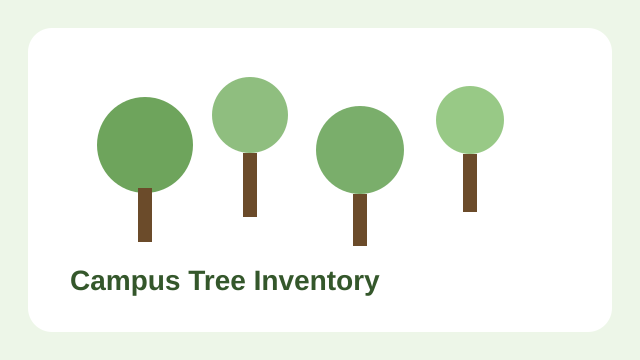
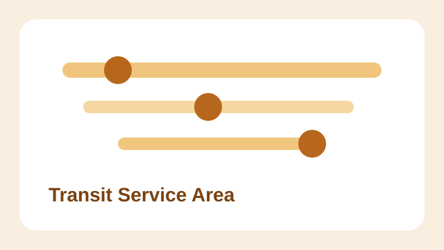
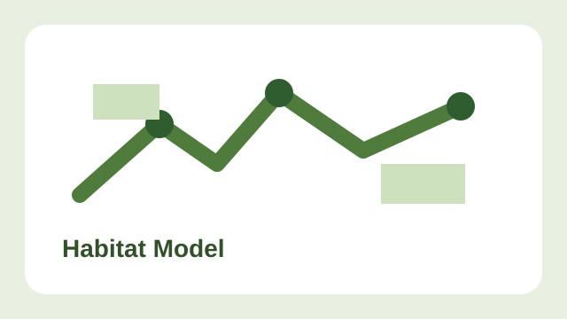

GIS Portfolio
Simple maps, clear analysis, and project highlights
This page shows GIS projects in a simple portfolio layout. The
header and hero section come first, and the project cards below open
modal windows with more details.
View Projects
Projects
Click a project card to open a modal with tools, a short description,
and a project link.

Remote Sensing
Urban Growth Change Map
Compared land cover from two years to show where the city
expanded.
Open details

Public Planning
Trail Accessibility Audit
Mapped sidewalks, ramps, and trails to spot access gaps near
parks.
Open details

Hazard Analysis
Flood Risk Story Map
Combined water and elevation layers to explain flood-prone
areas.
Open details

Field Data
Campus Tree Inventory
Organized point data for tree species, health, and maintenance
needs.
Open details

Network Analysis
Transit Stop Service Area
Measured walking access around bus stops to compare service
coverage.
Open details

Environmental GIS
Habitat Suitability Model
Used slope, land cover, and water layers to estimate suitable
habitat.
Open details